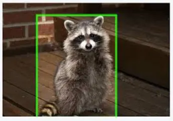

Cat vs. Raccoon classification
Summary
In this individual project I attempted to use a convolutional neural network to distinguish between cats and raccoons in order to keep raccoons out of my aunt’s peony farm. As I am the only one on this project it is my responsibility to do everything from compiling a proper dataset to training the model to installing the proper hardware into her farm to run the program on. I am still currently working on this project and there is no hard deadline, but I am hoping to have it finished before winter. I currently have the accuracy of the model to 85%, and am still tweaking things to increase the accuracy, as this is not yet high enough to be useful.
Analysis
In this project I had to do research on where to even start, so I was happy that I have already developed a relatively accurate model. The main challenge is the lack of data, which is slowing me down more than anything else. There is only one dataset on the internet of raccoons and it’s only 200 images and even then the images don’t transfer extremely well to my application as the camera angle is different. Because of this I have to get pictures of the raccoons and cats directly from the peony farm, which is very slow. Before this project I had no experience with tensor flow and keras, and now I feel confident in being able to develop a machine learning model with it. I also had no prior experience with feature engineering, so it was exciting to learn the importance of feature engineering and be able to see how much worse my model would perform if I didn’t do proper feature engineering. I also refined my python skills, as it had been a year since I had written in python prior to this project. Some opportunities for improvement for my next project is to put more effort into having a good dataset from day one. This would allow me to not only have a more successful model from the start, but it would also let me fix other issues as right now I don’t know what issues are from a faulty model vs not having enough data to have the model be properly trained.